M xDrive
Tração integral com prioridade traseira e três modos: 4WD, 4WD Sport e 2WD. O último funciona com o controle de estabilidade desligado.
Modos de tração 3
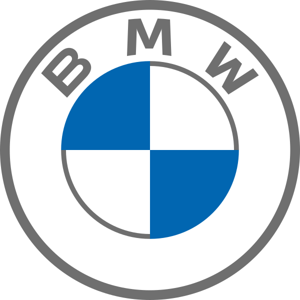
Ficha técnica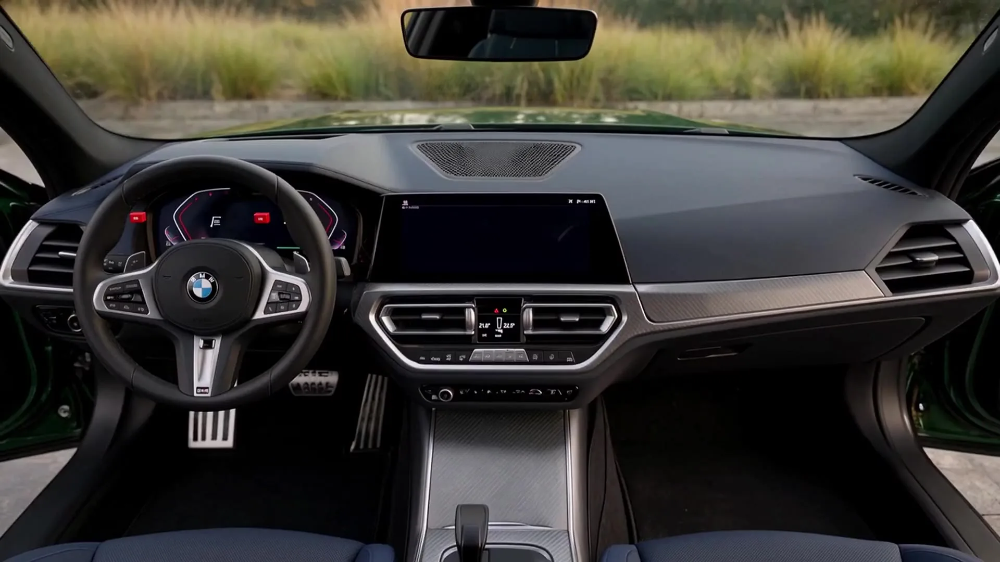
Sedan com tração M xDrive e 530 cv. Role a página para dar uma volta completa no carro, por fora e por dentro.
Seis cilindros em linha 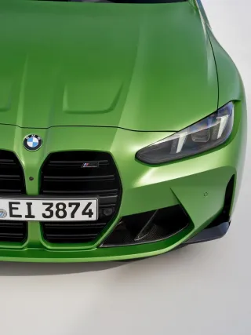 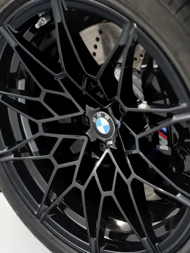 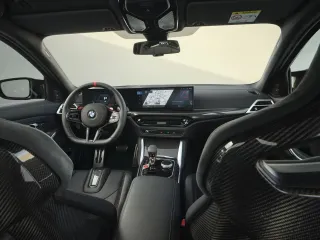
Grade vertical, para-lamas largos e rodas de medidas diferentes na frente e atrás. A M3 Competition mostra o que é antes mesmo de ligar o motor.
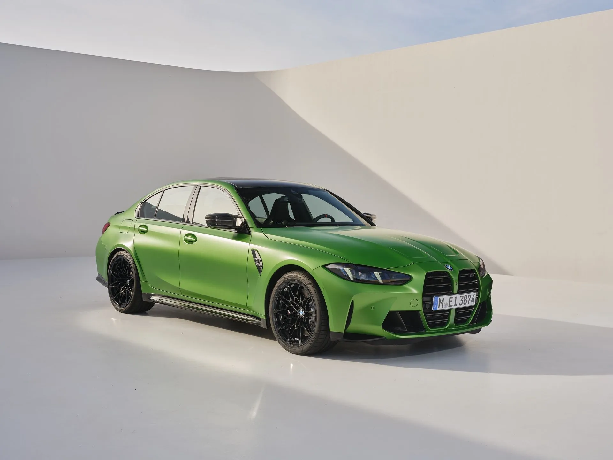
Tração integral com prioridade traseira e três modos: 4WD, 4WD Sport e 2WD. O último funciona com o controle de estabilidade desligado.
Modos de tração 3
Pinças fixas de seis pistões na frente e flutuantes de um pistão atrás, com discos ventilados. Os carbon-cerâmicos opcionais pesam cerca de 14 kg a menos.
Pistões por pinça dianteira 6
Eixo dianteiro em alumínio com geometria específica M e eixo traseiro de cinco braços, com subchassi aparafusado de forma rígida à carroceria.
Braços no eixo traseiro 5
Fica no eixo traseiro e trabalha em conjunto com o M xDrive e com o controle de estabilidade.
Bitola traseira 1.605 mm
01Na estrada, de frente.
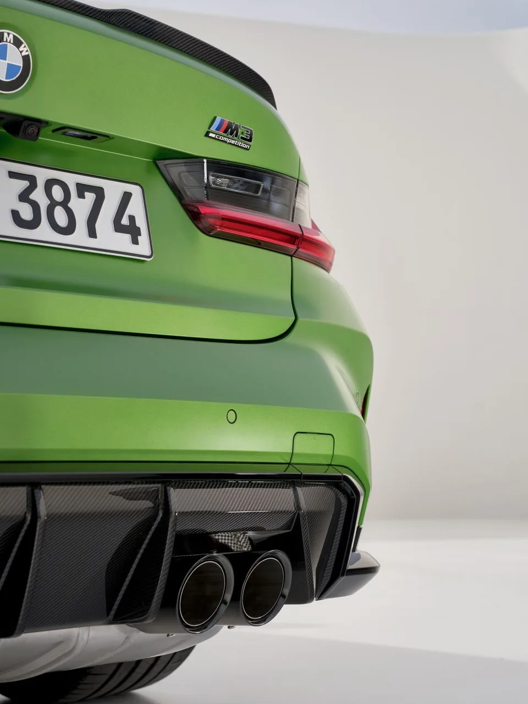
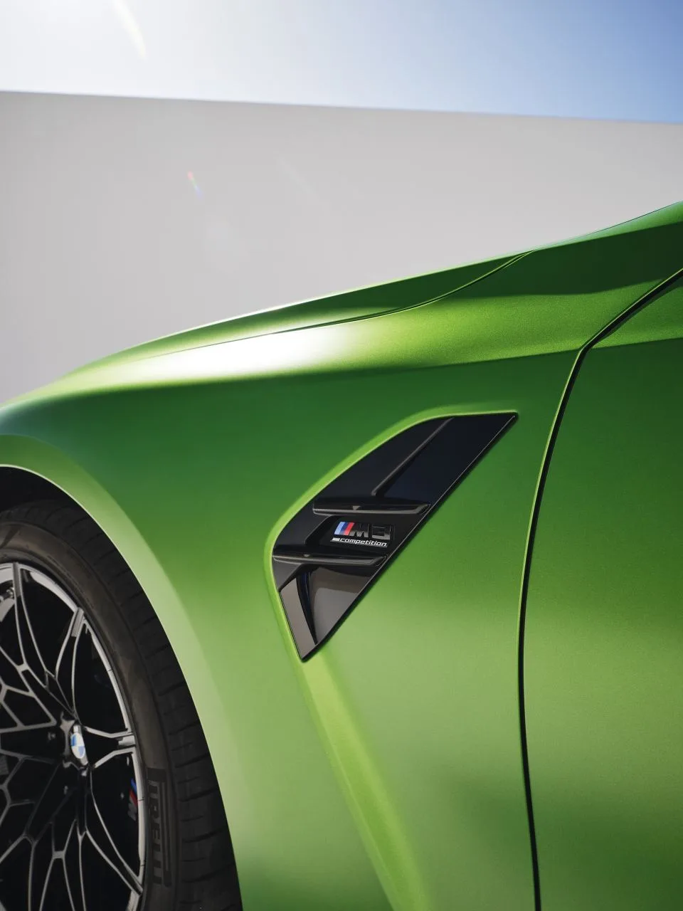
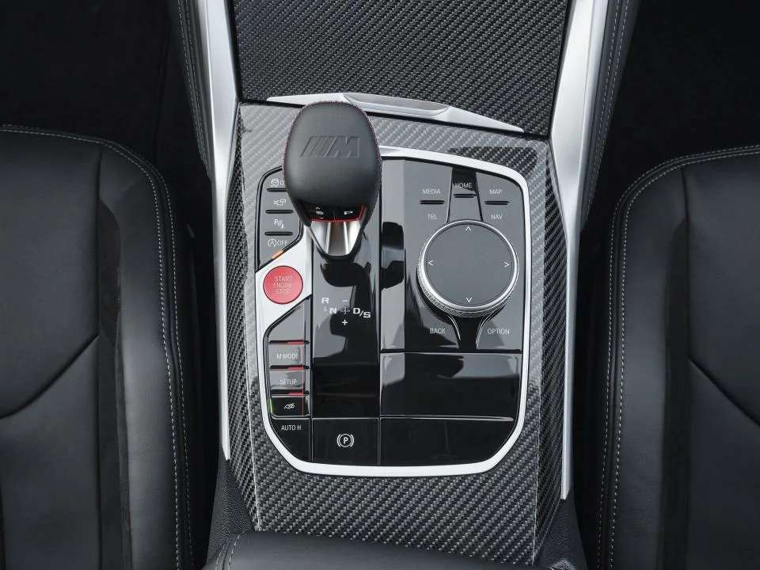
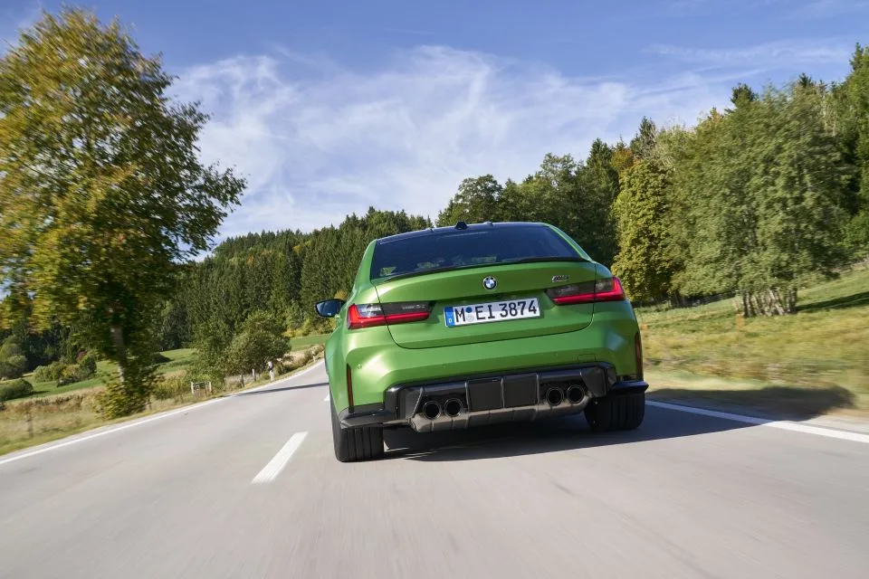
Bancos esportivos M, volante M de três raios e o BMW Curved Display inclinado para o motorista, com BMW iDrive e Operating System 8.5.
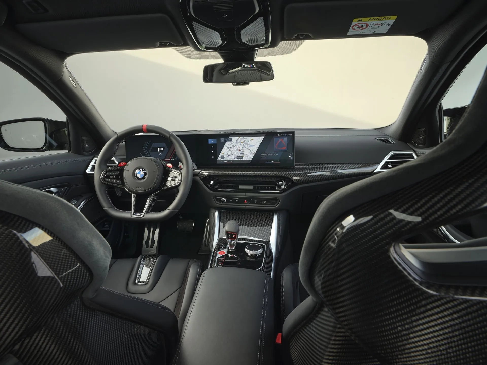
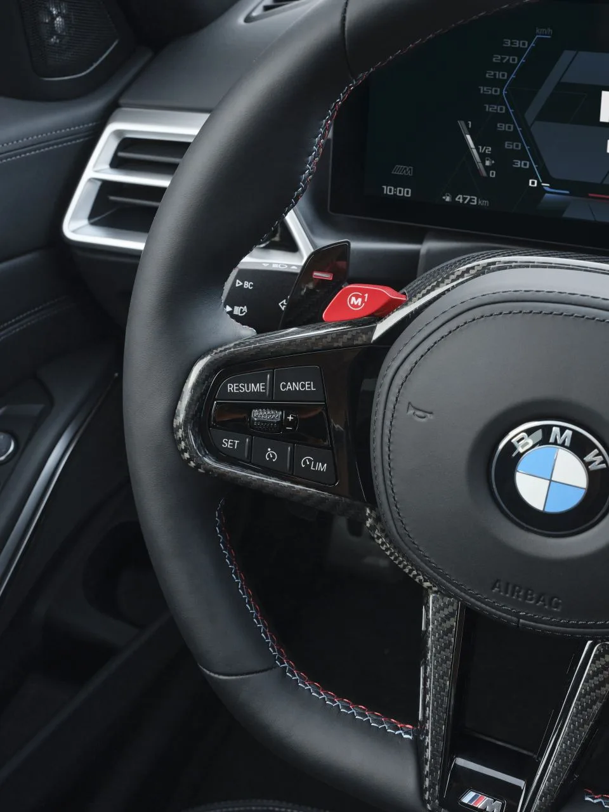
A BMW divulga o sedan M3 em três configurações. A do filme é a mais rápida delas.
A barra mais longa é a que chega primeiro aos 100 km/h. Velocidade máxima de 250 km/h nas três, limitada eletronicamente, ou 290 km/h com o M Driver's Package opcional.
BMW M3 Competition Sedan com M xDrive. Dados oficiais divulgados pela BMW.